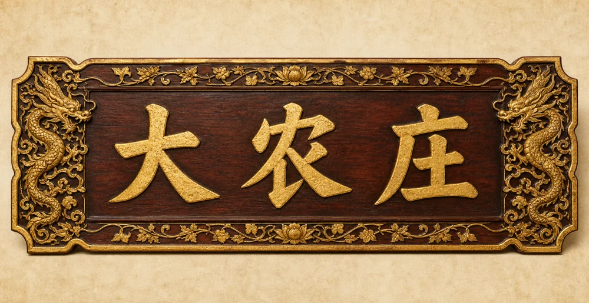

同一份玩法与数值,四种不同的「版面 + 管理方式」。点进去随便点——切页、点田、派工、改种都能动。重点看你顺不顺眼、有没有「游戏感」。挑出你喜欢的,我再做成正式版。
宅院页=一张活的水墨庄园大图,田/坊/矿是图上可点的热点,头上飘产出;点某处→底部滑出面板管理。最有「游戏感」。
每个产业=带插画+品级边框的「藏品卡」,横向卡架按类滑动;点卡→卡面就地展开管理,不再跳丑弹窗。美术前置。
一张精致「管家帐册」:产业排成紧凑表格,每行直接 +/- 派工、就地改种,常用操作全免弹窗。适合看数字/放置党。
保留现在的竖向卡片流+分区,但把丑弹窗换成「就地展开」,整体美化(插画/边框/纹样)。改动最小、最稳、最像现在的升级版。